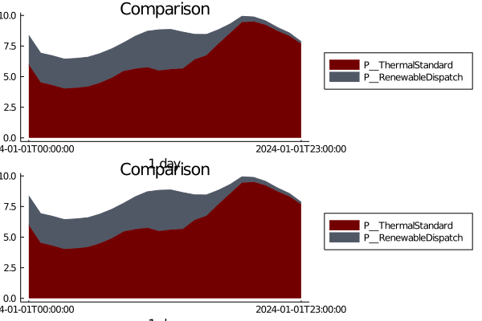
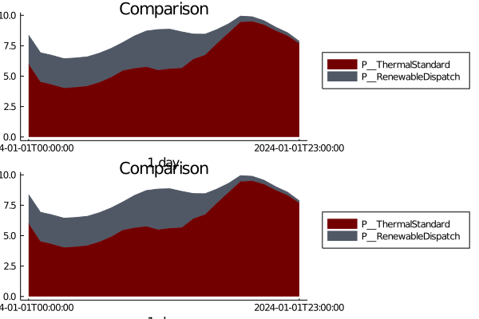

How to plot multiple results in subplots for comparisons
See How to set up plots to get started
Run the simulation and get various results
Plot the results as an array
plots = stack_plot([results_one, results_two]) 

Plot by Fuel Type
plots = fuel_plot([results_one, results_two], c_sys5_re)

Multiple results can be compared while also plotting fewer variables
variables = [Symbol("P__ThermalStandard")]
plots = stack_plot([results_one, results_two], variables) 
This page was generated using Literate.jl.